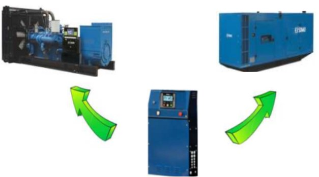

🛑 BARRERA DE SEGURIDAD OBLIGATORIA
Para desbloquear los manuales técnicos, el operador responsable debe aprobar la validación de EPP y Procedimientos de Energía Cero. Toda intervención requiere estrictamente una dotación de 2 personas.
📊 1. Criticidad de Subconjuntos (FMECA)
| Subconjunto | Clasificación | Modo de Falla / Efecto Global |
|---|---|---|
| Controlador APM303 | Crítico | Pérdida de comunicación de placa base. Resulta en imposibilidad de arranque o detención intempestiva del grupo electrógeno, dejando la red sin respaldo. |
| Gobernador / Actuador | Crítico | Atasco mecánico o falla magnética del Pickup. Genera inestabilidad severa de frecuencia (Hz) o sobrerrégimen (Overspeed), requiriendo corte de emergencia. |
| Sensores de Presión/Temp. | Crítico | Falsa lectura (Resistencia fuera de rango). Impide la activación del sistema de protección automática, arriesgando daño catastrófico al motor. |
🛠️ 2. Herramientas y Equipos Específicos
El trabajo en instrumentación requiere herramientas precisas para evitar cortocircuitos o falsos aprietes:
- Instrumentos de Diagnóstico: Multímetro digital True-RMS (calibración vigente), calibrador de lazos de corriente (4-20mA).
- Herramientas Aisladas: Juego de destornilladores de precisión dieléctricos (1000V) para borneras K1 y K6 del APM303.
- Protección Electrónica: Pulsera o guantes antiestáticos (ESD) para manipulación de placas de control.
- Apriete de Precisión: Torquímetro de rango bajo. Los sensores del bloque requieren un apriete exacto para asentar la arandela de cobre sin fisurar la rosca del block.
- Galgas de Espesores (Feeler Gauge): Obligatorias para calibrar la distancia del sensor de velocidad magnético.

Figura 1: Vista general del controlador y borneras traseras.
⚙️ 3. Procedimiento Específico de Mantenimiento
Fase 1: Desenergización y Energía Cero
Desconectar la alimentación principal desde el panel frontal. Dirigirse al banco de baterías (24V DC). Desconectar obligatoriamente el borne negativo (-) primero para evitar arcos eléctricos, seguido del positivo (+). Instalar candado LOTO en el cortacorriente. Medir con multímetro en las borneras del panel para confirmar ausencia de voltaje.

Figura 2: Aislamiento seguro del banco de baterías 24V.
Fase 2: Mantenimiento Controlador APM303
Con la pulsera antiestática colocada, abrir la consola central. Inspeccionar visualmente las placas de circuito impreso en busca de puntos de sobrecalentamiento. Retirar los conectores traseros (terminales de voltaje K6 y alimentación K1), aplicar limpiador de contactos dieléctrico de secado rápido. Rearmar asegurando la fijación mecánica de los bornes para evitar vibraciones inducidas por el motor.
Fase 3: Gobernador y Calibración de Sensor Magnético (Pickup)
Inspeccionar el varillaje del actuador en la bomba de inyección; debe tener un recorrido suave y sin juego excesivo. Localizar el Magnetic Speed Sensor en la carcasa de la cercha del volante.
Calibración Crítica: Retirar el sensor, limpiar la punta magnética de limaduras metálicas. Reinstalar roscando suavemente hasta que la punta toque la cresta de un diente del volante de inercia. Desde ese punto, retroceder el sensor girándolo hacia afuera exactamente 3/4 de vuelta para lograr el "Air Gap" especificado de 0.45 mm (0.020 pulgadas). Fijar firmemente con la contratuerca.

Figura 3: Ajuste de la luz (Air gap) del sensor de velocidad.
Fase 4: Inspección de Sensores de Bloque
Desconectar los arneses eléctricos de los sensores de presión de aceite y temperatura del refrigerante. Medir resistencia interna con multímetro y comparar con la curva óhmica del fabricante. Si se requiere reemplazo, limpiar meticulosamente la rosca del bloque, aplicar sellador de roscas de teflón líquido (no cinta) e instalar aplicando torque con herramienta calibrada. Limpiar cualquier derrame superficial.

Figura 4: Ubicación de los sensores de medición en el bloque.
✅ 4. Checklist de Puesta en Servicio (Re-comisionamiento)
Una vez finalizado el mantenimiento físico, valide estrictamente cada uno de los siguientes pasos para retornar el equipo a servicio seguro.

Figura 5: Verificación final de parámetros en tiempo real.